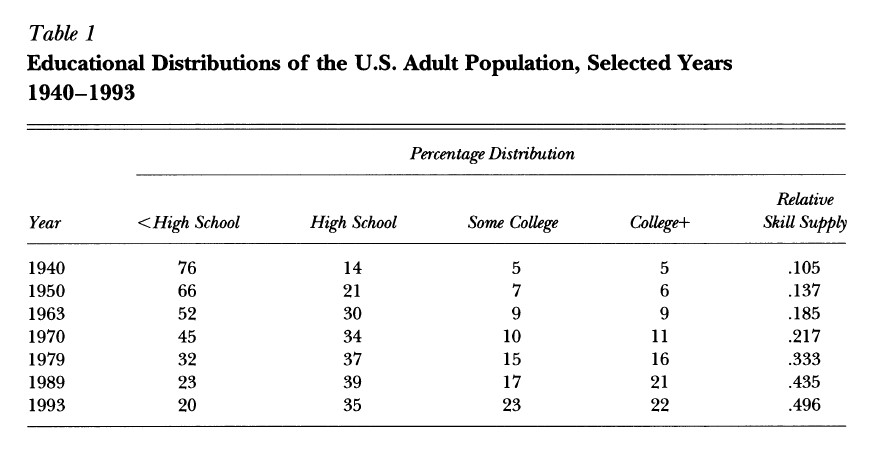
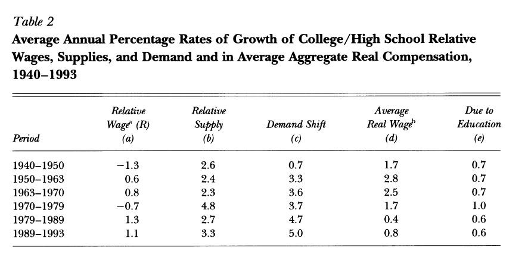
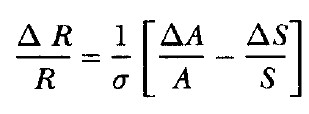
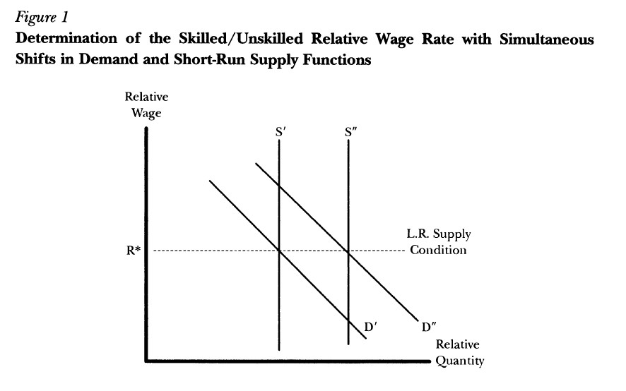

Changes in Earnings Inequality:
The Role of Demand Shifts
This article focuses on the increase in the relative demand for high-skilled workers in the 1980s which, due to the demand shift that occurred, caused their relative wages to rise.
The Indirect Argument for a Shift in Demand
The workforce has become more skilled in the last decades: the number of people who had completed college increased from 5% in 1970 to 22% in 1993 (Table 1); and the number of high school “dropouts” decreased from 76% to 20% in the same years. The demand for workers with a particular skill level is downward-sloping with respect to its wage, rather than perfectly elastic, as skilled and unskilled labor are not perfect substitutes. For this article, Johnson classifies the two types of labor: skilled and unskilled.

Table 2 shows how the ratio of the relative wages of college-educated workers to highschool educated workers (R) has changed over time. This relative wage fell in the 70s, but it increased later, as shown in the first column of Table 2. In the formula below, ΔR/R is the proportional change over some period, S is the measure of the relative supply of college to high school labor (last column of Table 1), A reflects the conditions concerning the relative demand for labor by skill, and ΔA/A means the average annual rate of growth in the demand shift parameter, whose values are reported in column c of Table 2. If ΔA/A was positive over a particular period, this would mean that the relative demand function in Figure 1 is shifting right.
The elasticity of substitution between the two types of labor is σ, which Johnson defines as around 1,5. Therefore, the higher the elasticity, the less impact it will have on the wage.


As seen in Figure 1, the shift from S’ to S’’ in the relative supply function, compared to the shift from D’ to D’’ in the relative demand function, was significantly greater. The rise in the wage premium for college graduates is typically interpreted as an outward shift in demand where supply is fixed in the short-run, and thus being perfectly inelastic.

The Causes of the Demand Shifts
In this article, two major sets of explanations are presented for why the relative demand for skilled workers in the US increased so fast during the 80s: first, the increased openness for the US economy, and second, the skill-biased technological change (or SBTC).
Increased Opennes
The increase in the earnings inequality in the US during the 80s matched the huge increase in the trade deficit, which made several investigators to believe “trade” was the major explanation of demand shifts. Since the 60s, there was a “globalization” in the US economy, which made several goods to be imported, because they could be acquired at a lower price than they would if they were produced domestically. As such, “outsourcing” was practiced by many firms, and many unskilled labor functions were set up in low-wage countries, leaving only their headquarters functions in the US. The demand curve for relatively high-skilled labor has been shifting fairly consistently for 40 years.
Skill-Biased Technological Change (SBTC)
SBTC is the main cause of the shifts in the relative demand function observed in the 80s. Johnson further supposes that all jobs can be arranged from the most complex to the least complex, which underlies the assumption that each worker is either skilled or unskilled.
If skilled workers have a comparative advantage in the more-complex jobs and unskilled workers have a comparative advantage in the less-complex jobs, then unskilled workers will fill the less-complex jobs and skilled workers will fill out the rest.
The shifts that can occur in the level and distribution of the potential productivity of workers of different skill levels in each of the jobs can be classified in terms of who becomes more productive in which jobs:
- Intensive SBTC – makes skilled workers more productive in jobs they already perform. It will only increase the relative demand for skilled labor to the extent that the elasticity of substitution between the two types of labor is greater than 1, meaning the real wage rate of unskilled labor will rise as skilled workers become better at what they normally do.
- Extensive SBTC – skilled workers become more efficient in jobs that were formerly done by unskilled workers. Its change causes a shift to the right in the relative demand function, regardless of the value of the substitution parameter.
- Skill-Neutral Technological Change – raises the productivity and efficiency of all groups proportionally. It has no effect on the relative demand for labor..
Evidence on Technological Change
In this section, Johnson presents evidence that the relative demand for skilled labor in other countries is similar to the US’ patterns, reinforcing that technological change is an important factor to take into account.
Why Has Technological Change Not Increased Average Wages?
From the mid-70s, the average real wage rate in the US grew at a very low rate, because the high-end wages have increased, even though this was matched by low end wages decreasing. Since the wages of both types of workers rise, the average real wage rate rises. However, because of imperfect substitutability, the skilledunskilled relative wage rate will also rise slightly, and the average wage will remain stagnant.
Will Inequality Continue to Rise?
As computer technology becomes better able to perform more sophisticated tasks, unskilled workers might become more efficient in jobs formerly done by skilled workers, representing the reverse of Extensive SBTC. It might be supposed that the huge increase in the private rate of return to investment in a college education associated with the rise in the college/high school relative wage would cause a large increase in the relative supply of college graduates, which could eventually reduce the wage premium of high-skilled labor. Johnson states that an appropriate public policy response to the phenomenon of increasing inequality is to increase the fraction of people who go to college.
Photo from: Unsplash
Original Article: Johnson, G. (1997): “Changes in Earnings Inequality: The Role of Demand Shifts”, Journal of Economic Perspectives, 11(2), pp. 41-54.